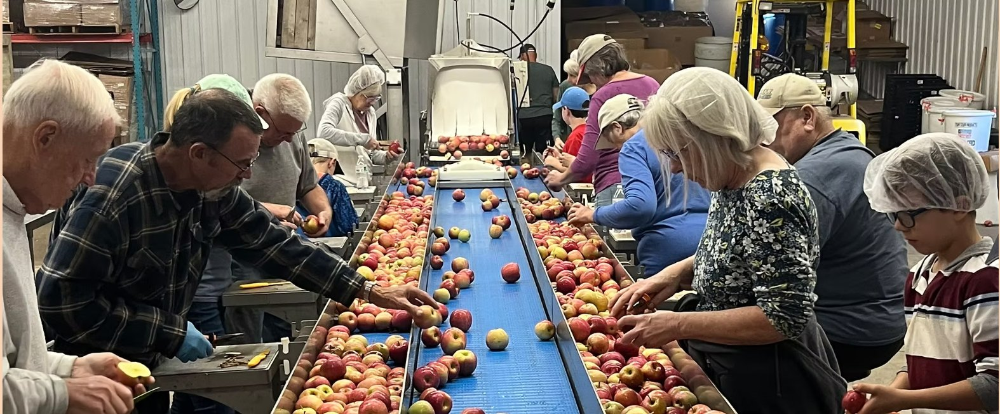
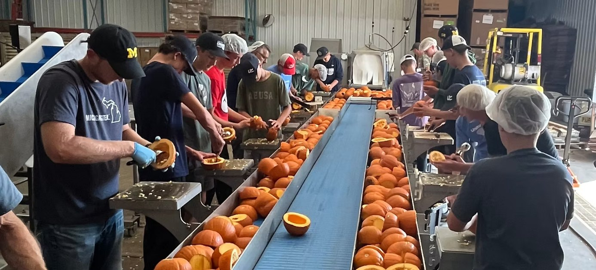
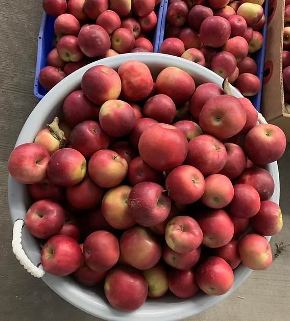
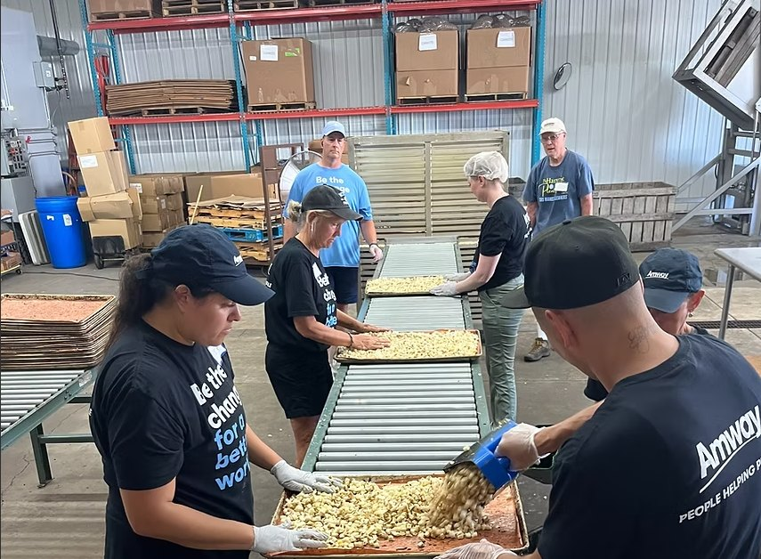

Schedule a Volunteer Shift
Experience intergenerational community in Jenison. Individuals of all ages and all abilities serving shoulder to shoulder.
Reserve a Shift
Jenison, Michigan
Feeding the hungry of the world one serving at a time.
A map of countries served will go here.

Experience intergenerational community in Jenison. Individuals of all ages and all abilities serving shoulder to shoulder.
Reserve a Shift
Turn your excess harvest, surplus crops, and unharvested fields into life-saving nutrition. Drop off in Jenison or coordinate pickup.
Donate Surplus Crops
Every dollar keeps our dehydrators running, supplies food-grade packaging, and ships servings across the globe in Christ's name.
Give NowA look at how rescued produce becomes nutritious soup mix in Jenison.
Logo files for local Michigan growers, supporting churches, and community foundations will go here.